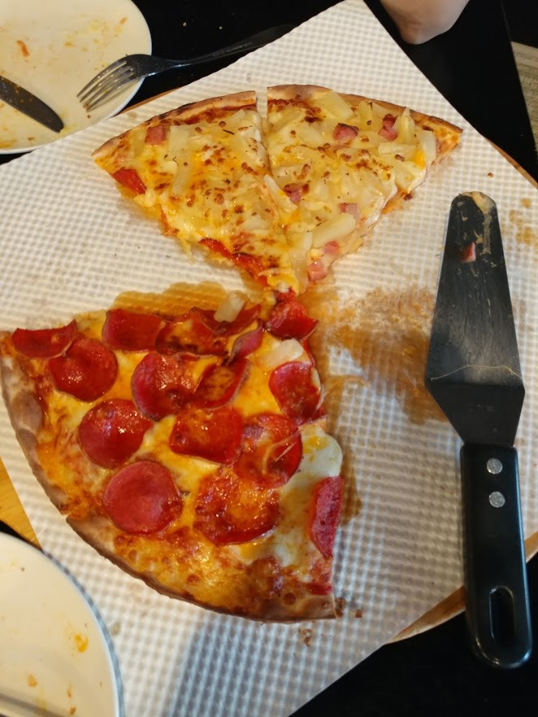
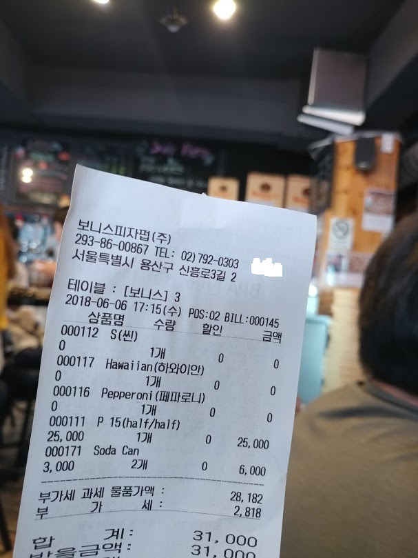
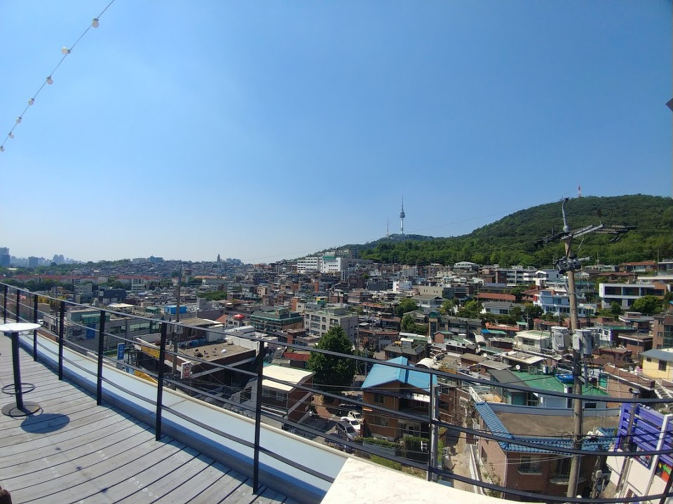

해방촌 보니스 피자펍의 성공과 서촌의 비극
게시: 2018-06-11T06:30:00+09:00
며칠 전에 해방촌에 갔다가 맛집으로 명성이 자자한 보니스 피자펍에 갔습니다. 오후 5시라서 좀 일찍 간 것이었는데도 한 15분 정도 줄을 서야 했습니다.
이 글이 결코 보니스 피자펍에서 뭐 얻어먹고 올리는 파워블로거지글이 아니라는 것을 입증하기 위해, 먼저 단점부터 장황하게 나열하겠습니다.
1) 자리가 좁습니다. 바로 옆자리에 앉은 커플들이 하는 닭살 돋는 대화를 50cm 옆에서 그대로 다 들어야 합니다.
2) 카운터에 찾아가서 직접 주문해야 하는 셀프 주문 시스템입니다. 음료수도 냉장고에서 손님이 직접 꺼낸 뒤 카운터에서 계산을 해야 합니다.
3) 무엇보다 저를 당황하게 만든 것은 영어로 주문을 해야 하더라는 것입니다. 외국인 종업원이 계산하러 간 저에게 "Hello~"를 하더라고요. (나중에 다른 분께 들었는데 한국말로 해도 대충 다 알아들으신다고...) 저는 경리단길 맥파이 같은 곳처럼 종업원이 외국인이더라도 한국말을 유창하게 할 거라고 생각했다가 당황했어요.
4) 항상 웃는 표정이던 맥파이 종업원들과는 달리, 일부 외국인 종업원들은 (외국인치고는) 무뚝뚝한 편이었어요. 불친절하다라는 느낌까지는 아니더라도, 특히 그 러닝셔츠 입고 뭔가 바쁘게 움직이던 근육질의 키 큰 백인 아저씨는 노동에 지친 표정이었습니다.
5) 저는 6월 초에 갔기 때문에 뭐 불편한 것 없었습니다만, 한 여름에도 에어컨을 안 튼다고 하더군요. 덥대요.
이런 단점들에도 불구하고, 장사가 엄청나게 잘 되었습니다. 가만 보니까 장사가 잘 되는 이유가 딱 2가지더군요.
1) 피자가 맛있습니다. 그렇다고 "어머 이건 천상의 맛이야" 라든가 뭐 그런 수준은 아니고, 질 좋은 치즈를 듬뿍 썼더군요. (피자 맛이 다 그렇죠 뭐)
2) 이게 결정적인 것 같은데, 값이 매우 상식적인 수준이었어요. 가장 큰 사이즈인 파티 사이즈를 시켜서 와이프와 제가 반만 먹고 남은 반은 싸왔으니까, 결국 저희 부부는 콜라까지 합해서 1인당 1만원도 안 쓴 셈입니다. 경리단길 가본다고 나섰다가 이 정도에 저녁 해결하고 왔으면 꽤 경제적인 결과라고 저는 생각합니다.

(원래 사진을 찍기 전에는 음식을 먹지 않아야 하는 것이 동방예의지국의 식사 예절이거늘... 배불리 먹은 다음에야 사진을 찍었습니다. 둘이서 두조각씩 먹었더니 배부르던데요. 페페로니 피자와 하와이안 피자 half & half 입니다. 싸온 것은 아직 냉동고에 들어있습니다.)

(영수증의 대표자분 성함은 혹시 몰라 지우개 처리...)
요식업이라는 것이 성공 확률이 매우 낮은 업종이쟎아요 ? 바닥 사정 훤히 꿰뚫는 한국 사람들도 해내기 힘든 그런 성공을 외국인들끼리 이렇게 대박 음식점에서 만들었다고 하니 대견하기도 했지만 약간 억울한 느낌도 들더라고요. 제가 위에 적은 보니스 피자펍의 성공 요인을 보니 저 정도는 뭐 별로 대단한 비결이라고 생각되지도 않는데 말이지요. 뉴질랜드 사람들이라서 자기들 고향에서 질좋고 싼 치즈를 들여와 쓰기 때문이다 ? 글쎄요, 관세나 운송료 등을 감안하고도 만약 그런 것이 가능하다면 차라리 치즈 유통업을 해서 더 큰 돈을 버는 것이 낫지 굳이 피자집을 할 것 같지는 않습니다.
결국 보니스 피자펍의 성공 요인은 결국 비용 최소화입니다. 물론 다른 모든 식당들도 비용을 최소화하기 위해 노력합니다. 그런데 왜 보니스 피자펍과 같은 성공을 다들 못 거둘까요 ? 거기에 대해 곰곰히 생각을 해봤습니다. 먼저, 일반적인 식당의 비용 구조를 찾아봤습니다.
http://onenours.co.kr/ab-905-95&OTSKIN=layout_ptr.php&PB_1419904903=7
위 사이트의 설명에 따르면 일반적인 요식업의 비용과 수익 구조는 아래와 같습니다. (물론 이건 매우 성공적인 경우로 보입니다. 이익이 27%나... 실제로는 대부분 이익이 저것보다는 적겠지요.)
항목 비율
임대료 10%
인건비 17% (주인 본인의 인건비도 포함)
공과금 7%
재료비 40%
순이익 27%
----------------
계 100%
여기서 보면 가장 많이 들어가는 비용은 역시 재료비, 그 다음이 인건비입니다. 이건 약간 의외였는데, 저는 요식업자들을 가장 괴롭히는 것은 임대료라고 알고 있었거든요. 전에, ㅍㅍㅅㅅ에서 카페 사장님들을 모아놓고 인터뷰를 한 것을 읽었는데, 거기서 인상적이었던 구절이 "임대료만 낮으면 어떻게든 생존할 수 있다"라는 것이었습니다. ( http://ppss.kr/archives/67424 ) 그러나 실제로 보면 임대료는 전체 매출의 10% 정도에 불과합니다. 이건 해외 사례도 비슷한 것 같아요. 구글로 영문 자료도 뒤져보면 (가령 https://restaurantrealestateadvisors.com/rent-for-restaurant https://www.quora.com/What-is-the-cost-breakdown-of-running-a-restaurant 등등 ) 임대료는 6~10% 정도로 잡습니다.
그런데 정말 자영업자분들 이야기를 들어보면 임대료에 대한 부담이 특히 심한 것으로 보입니다. 생각을 해보면 당연합니다. 임대료는 탄력성이라고는 1도 없는, 진짜 고정비거든요. 장사가 잘 안되는 경우, 재료비는 당연히 그에 따라 줄어듭니다. 인건비는 그것보다는 탄력성이 작지만, 1~2달 장사가 안 되면 홀 서빙 인력은 줄이면 그만입니다. 막판에는 그냥 주인 및 그 가족들만 나와서 일하는 경우도 많지요. 그러면 수익은 많이 못 내더라도 버티는 것이 가능합니다. 문제는 임대료입니다. 장사 잘 안 된다고 임대료를 깎아주는 건물주는 없거든요.
대신 장사 잘 된다고 임대료를 더 받는 것도 아니지 않느냐라고 반문하실지 모르겠습니다만, 사실 대부분의 건물주는 장사가 잘 되면 임대료를 높입니다. 대부분의 상가 임대 계약은 1년 단위로 갱신됩니다. 그런데 임차인, 그러니까 식당주인이 장사가 너무 잘 되어 돈을 긁어모으는 것이 보이면 1년 계약이 끝날 때 즈음해서 임대료를 높여서 제시합니다.
소위 자유경제주의자 분들은 '시장 상황에 따라 결정되는 일이므로 거기에 정부가 규제 등으로 개입해서는 안 된다'라고 말씀들 하십니다. 문제는 그렇게 장사가 잘 되는 식당의 임대료 계약이 꼭 자유롭고 공정하게 이루어지는 것이 아니라는 점에 있습니다. 식당이라는 업종의 특징이, 소위 말하는 '목', 즉 식당 위치에 매우 민감합니다. 그러다보니 건물주가 터무니없는 임대료 인상을 제시해도, 어지간히 대단한 레시피를 가진 음식점이 아니라면 그런 임대료 요구에 굴복할 수 밖에 없습니다.
게다가 더 중요한 것이 있습니다. 바로 권리금입니다. 권리금의 액수는 대개 1년 순이익 정도라고 하던데, 정말 장사가 잘 되는 음식점의 경우 훨씬 큰 권리금이 오가기도 한답니다. 물론 장사가 안 되는 경우엔 아예 권리금이 없기도 합니다. 문제는 이 권리금이라는 것이 비교적 최근까지만 해도 법적으로 보호되는 권리가 아니다보니, 음식점 사장님들은 이 불안한 목돈을 떼일까 항상 전전긍긍했습니다. 비록 법 개정으로 이젠 어느 정도 보호가 된다고 하지만, 그것도 온전한 보호는 아니니 여전히 전전긍긍하실 것 같습니다. 누가 그 권리금을 떼가냐고요 ? 바로 건물주입니다.
제가 들은 바로는, 과거 권리금에 대한 법적 보호가 없던 시절 강호에 통용되던 불문률이 대충 이랬답니다.
1) 권리금이라는 존재에 대해서 건물주는 전혀 모르는 것으로 한다.
2) 따라서 기존 임차인이 신규 임차인으로부터 권리금을 어떤 조건으로 얼마를 받건 건물주는 전혀 관여하지 않는다. 즉, 기존 임차인이 권리금을 챙기는 것을 용인한다.
3) 단, 아래 2가지 경우엔 기존 임차인이 권리금을 한 푼도 못 받고 퇴거당할 수 있다
- 건물주가 건물을 리모델링 또는 신축하는 경우
- 새로 건물을 인수한 새건물주가 "내가 직접 장사를 할 거니까 나가달라"며 계약 갱신을 거부하는 경우
그러니까, 음식점 사장님 입장에서는 자기가 세든 상가의 건물주가 건물을 매물로 내놓았다는 소문이 돌면 일단 비상이 걸릴 수 밖에 없습니다. 장사가 잘 되는 가게인 경우 수천만원~억 단위의 권리금이 있는 셈인데, 그걸 하루 아침에 강탈당하는 셈이니까요. 그래서 복덕방 사장님들이 종종 말씀하시는 것이, "돈 좀 있고 마음만 모질게 먹으면 돈 버는 건 어렵지 않다"라고 하더군요. 건물을 사서 위 3번 항목에 따라 기존 음식점을 내쫓고 자신 또는 친척이 직접 음식점을 하거나, 혹은 하는 척 하면서 다른 사람에게 '바닥 권리금'을 받고 넘겨버리면 된다는 것이지요.
그러나 음식점 사장님들께는 정말 다행스럽게도, 상가 건물이라는 것은 주식은 물론 아파트와도 달라서 거래가 그렇게 자주 있지 않습니다. 그럴 수 밖에 없습니다. 생각해보십시요. 안정적으로 따박따박 월세 300만원이 나오는 상가건물의 가치는 어느 정도이겠습니까 ? 건물주 입장에서 그 건물 판 돈을 은행에 정기예금으로 넣었을 때 월 300만원을 받으려면 요즘 1년 정기예금 이율이 2%라고 할 때 300만 x 12개월 / 2% = 무려 18억원에 팔아야 합니다. 실제로는 그렇게 18억원에 팔아도 건물주는 손해일 것입니다. 왜냐고요 ? 인플레가 있다보니, 그 건물주가 20년 전에 그 건물을 18억원을 주고 샀을 리가 없고, 훨씬 싼 가격 가령 8억원에 샀을 것입니다. 그러면 국세청은 귀신처럼 그 차익인 10억원에 대한 양도 소득세를 왕창 떼어갑니다. 양도 소득세가 40%라고 하면 결국 건물 팔고 남은 돈은 18 - 4 = 14억일 것이고, 그걸 2% 정기 예금에 넣어봐야 월 230만원 정도 밖에 나오지 않습니다. 건물주는 매달 받던 돈이 300에서 230으로 줄어드는 것이지요. (물론 실제로는 복비다 뭐다 해서 계산이 훨씬 더 복잡합니다.) 실제로는 대부분의 상가에서 그렇게 월세가 은행 이자처럼 따박따박 나오지도 않고, 또 상가를 새로 매입하는 사람도 최소한 3%, 웬만하면 5%의 수익률로 건물을 사려하기 때문에 실제 그런 건물이라면 3% 수익률로 계산해서 12억원 정도에 팔릴 것입니다. 그래서 실제로 기존 건물주가 매달 받게 될 이자 소득은 그만큼 훨씬 더 줄어들 것입니다.
그 결과로 나오는 현상이 안정적으로 따박따박 월세가 나오는 양질의 상가건물은 매물이 거의 없다는 점입니다. 그런 건물, 가령 잘 나가는 동네의 코너 위치를 점유한 상가가 매물로 나오는 경우는 딱 2가지라고 흔히 하더군요. 하나는 건물주가 죽었는데 그 자식들이 사이가 좋지 않아 매각한 뒤 돈을 나눠가지려는 경우이고, 나머지 하나는 건물주가 도박에 손을 댈 경우라고 합니다.
(실제로는 시내 중심가 좋은 동네라면 저것보다 더 적은 수익률로 건물이 팔리는 경우도 많고, 반대로 시 외곽에는 5~10%의 높은 수익률로 팔리는 싼 건물도 많습니다. 큰 건물의 1~2층 상가를 구획으로 나누어 파는 것들도 수익률이 높은 편인데, 그런 물건은 안 사시는 것이 좋습니다. 그런 구분 상가는 공실이 생기는 즉시 재산이 아니라 피를 말리는 거머리가 됩니다.)
그런데, 이유가 무엇이건 간에 상가가 팔려서 새 주인이 들어오면 그 음식점 사장님은 일단 패닉에 빠질 수 밖에 없습니다. 기존 임대 계약 잔존 기간인 1년 미만의 시간 안에 새 건물주가 건물을 산 이유가 그냥 월세 받으며 사실 분인지, 권리금 약탈을 하실 분인지 드러날테니까요.
특히 요즘처럼 부동산 가격이 폭등하는 경우엔 더더욱 그렇습니다. 위에서 이야기한 사정들 때문에, 건물주는 건물 매각시 당연히 액수를 크게 부릅니다. 그럼에도 불구하고 그 액수를 지불하고 건물을 사들이는 사람은 더 비싼 가격에 되팔아 시세 차익을 노리거나 월세를 크게 올려받을 것이 분명합니다. 어느 쪽이건 음식점 사장님으로서는 반가울 리가 없습니다. 그 결과로 나타나는 것이 젠트리피케이션인 것입니다. 건물주가 바뀌면서 건물값이 오르고, 그에 따라 월세도 오르면서 음식점 주인들이 쫓겨나는 것이지요.
어떤 분들은 그런 젠트리피케이션이 어쩔 수 없는 일이고, 또 긍정적인 효과도 있다고 합니다. 가령 홍대에서 젠트리피케이션으로 밀려난 가게들이 임대료가 더 싼 동네를 찾아 나서는 바람에 인근 상수동과 연남동이 떴다고 하지요. 보니스 피자펍이 위치한 해방촌도 경리단길이 젠트리피케이션으로 임대료가 폭등하자 새롭게 뜨고 있는 동네입니다. 서울 시내에 관광 명소가 늘어나는 것이니 나쁜 일은 아니라고 할 수 있습니다.

(여기는 경리단길... 사진 저 멀리 왼쪽 능선에 주택들이 다닥다닥 붙은 곳이 해방촌입니다. 해방촌의 랜드마크인 성당 건물이 삐죽 튀어나온 것이 보입니다.)
하지만 그건 당사자가 아닌 사람들의 결과론적 이야기에 불과합니다. 실체가 분명한 돈은 아니라고 해도, 열심히 장사해서 가게를 띄운 뒤에 큰 액수의 권리금을 받고 가게를 처분할 생각에 부풀어 있던 음식점 사장님들에게는 그런 일은 큰 액수의 돈을 눈 뜨고 강탈당하는 셈입니다. 저도 들은 이야기에 불과하지만, 많은 음식점 사장님들이 장사를 하는 목적이 매출을 많이 올려 수익을 내는 것도 있지만 권리금 장사가 목적이라고 하더군요. 즉, 싼 권리금에 가게를 인수하여 손님이 많이 오는 유명한 가게로 만든 뒤, 비싼 권리금에 가게를 처분한 뒤 또 다른 동네에서 또 그런 일을 반복하는 것이 진짜 장사를 잘 하는 사람이라고요. 사실 그런 권리금 장사 자체도 건물주가 권리금을 합법적으로 빼앗는 것 못지 않게 비도덕적인 일 아닌가 싶긴 합니다.
이번에 망치 폭행 사건이 일어나게 된 발단이 된 서촌이라는 동네는 제가 좀 아는 동네입니다. 과거 그 지역은 낙후된 곳이었고 넉넉치 않은 동네였어요. 그런데 그 동네가 뜨기 시작한 것은 주거지 재정비 사업에 따라 신규 도로가 만들어진 것도 있고, 또 한옥에 대한 관심 고조와 서울 시내 골목 관광 붐도 있습니다만, 제가 아는 한 더 큰 이유는 값싼 임대료를 찾아 외지에서 흘러 들어온 젊은이들이 과거와는 다른 산뜻하고 신선한 맛집들을 열기 시작하면서였습니다. 결국 그 동네의 부동산 가격을 올려 놓은 것은 정부의 돈과 젊은이들의 창의성과 노동력이었습니다. 그런데 실제로 그 이익을 가져가는 것은 '아무 부가가치도 만들지 않은' 건물주들입니다. 그게 과연 옳은 일인지에 대해서는 심각하게 의문이 듭니다.
문제가 발생한 서촌의 그 건물은 2년 전에 새 건물주가 무려 48억을 내고 산 것입니다. 어떤 분들은 무려 48억이나 주고 산 건물에서 고작 월세 300만원 내고 계속 장사하겠다는 것이 오히려 더 도둑심보이다, 48억짜리 건물에서 월세 1200만원을 요구하는 것은 딱 3%의 수익률이니 적정한 것이다 라고 말씀하십니다. 그러나 그 전에 생각할 것이 있습니다. 과연 그 건물이 48억이라는 가치가 있었는가 하는 점입니다. 그러자면 그 족발집에서 월세 1200만원을 낼 만한 매출이 나왔어야 합니다. 적절한 월세가 매출의 10%라는 것을 감안하면, 그 족발집에서는 매월 1억2천의 매출이 나와야 합니다. 아마 불가능했을 것입니다. 아마 건물주는 그 동네 부동산이 계속 상승하니까 더 높은 가격에 되팔 것을 생각하고 48억이라는 거품투성이 가격에 그 건물을 샀을 것입니다. 이건 투기 앞에서는 시장이 정상적으로 동작하지 않는 대표적인 사례이고, 결국 투기에 의한 과도한 부동산 가격 상승은 모두에게 파멸적인 결과를 낳을 뿐이라는 것이 이번 사건을 통해서도 입증된 것이라고 저는 봅니다. 그런 비극을 막기 위해, 정부는 부동산 가격에 과도한 거품이 끼지 않도록 세금과 규제를 통해 개입해야 합니다.
보니스 피자펍 이야기로 되돌아가 보지요. 보니스 피자펍이 성공한 이유는 양질의 재료를 쓴 피자를 싼 가격에 팔기 때문인데요, 그럴 수 있었는 이유는 피자나 식당, 부동산 계약 등에 아는 것이 전혀 없는 문외한인 제가 제 맘대로 분석한 바에 따르면 아래와 같습니다.
1) 메뉴판에 생소한 주문 시스템에 대한 자세한 안내문을 게시하여 홀 서비스를 위한 인건비를 최소화했습니다.
2) 테이블을 최대한 밀착 배치하여 좁은 공간에서 최대한의 매출을 끌어낼 수있도록 했습니다. 그 때문에 옆 테이블과 부담스러울 정도로 가깝다는 문제는 손님들이 맥주를 마시는 활달한 젊은이들이라서 많이 시끄럽다는 점으로 상쇄시켰습니다. 케이블 TV를 배치하고 음악을 크게 틀어놓는 것도 도움이 되었고요.
3) 제 생각엔 이게 결정적인데, 임대료가 비싼 경리단길이 아니라 상대적으로 싼 해방촌에 위치를 정했고, 액수는 알 수 없지만 꽤 합리적인 가격에 임대료 계약을 한 것 같습니다.
사실 가장 중요한 위 3번 문제는 제 추측일 뿐 사실과는 전혀 다를 수 있습니다. 그럼에도 불구하고 그렇게 추측한 이유는 달리 비용을 더 줄일 곳이 없어서 그랬습니다. 다만, 어떻게 한국 사람들끼리도 그런 계약이 어려운데, 전원 다 외국인인 이 사람들이 어떻게 그렇게 잘 계약을 할 수 있었을까 하는 의문이 들더군요. 혹시 이 뉴질랜드 사람들이 부자라서 이 건물을 산 것이었을까요 ? 아니면 이 뉴질랜드 사람들 배후에는 한국인 사장님이 있는 것일까요 ?
그 생각이 들어 현장에서 영수증을 보니, 정말 대표자 명의는 한국분 이름이더군요. 그 이름으로 구글링을 해보니, 50대의 여성분이신 듯한 이 대표자분이 이 보니스 피자펍을 2014년 경에 아예 법인으로 등록을 하셨더라고요. 어떤 블로그를 보니 보니스 피자펍은 뉴질랜드 남편과 한국인 와이프가 운영하는 곳이라고 했는데, 이 대표자분은 한국인 와이프의 어머니 또는 친척이거나, 아예 본인이실 지도 모르겠습니다. 혹시 이 분이 건물주인가 싶어 건물대장을 열람해보니, 그건 아니었습니다. 해당 건물에 주소지를 두신 다른 성함을 가진 분이 건물주로 되어 있으시더라고요.
제가 알기로는 최근 해방촌 부동산 가격이 폭등하여 상가 건물의 경우 저 위 쪽 비탈길 같은 곳도 평당 5천만원 정도 합니다. 보니스 피자처럼 평지 대로변이면 훨씬 더 비쌀 겁니다. 그러니까 대지가 대략 30평인 보니스 피자펍 건물을 매각할 경우 최소 20억, 아마 그보다 훨씬 더 높은 가격이 나올 것 같아요. 망치 사건의 서촌 궁중족발 건물이 2년 전에 무려 48억원에 팔렸다는데, 보니스 피자펍보다 불과 3평 넓을 뿐입니다. 제가 볼 때는 보니스 피자펍 일대가 서촌보다 훨씬 더 유동 인구도 많고 또 용산 미군기지 재개발로 인해 향후 발전성도 더 높으니, 어쩌면 20억대가 아니라 40억대가 될지도 모르지요. 망치 사건의 건물주는 2년 만에 임차인을 내몰고 70억에 건물을 내놨다지요 ?
보니스 피자펍과 그 건물주의 관계가 어떤 것인지 저는 전혀 모릅니다만, 건물대장을 보니 60대이신 건물주는 1987년에 이 건물을 지었고 지금도 그 건물 윗층에 살고 계신 모양이에요. 그 이후로 주인이 안 바뀌었어요. 원래 1층에는 부동산 소개소가 있었던 것 같은데, 어찌어찌하여 2012년에 그 자리에 보니스 피자펍이 들어왔고, 6년이 지난 지금도 성업 중입니다. 중요한 것은 보니스 피자펍 건물의 시가가 아니라, 건물주가 안 바뀌었다는 점입니다. 그래서 보니스 피자펍이 아직도 싼 가격에 피자를 내놓을 수 있고, 해방촌의 명소가 되었다는 점입니다. 덕분에 해방촌에 사람들이 몰려들고, 그래서 그 건물의 시장가도 높아지는 것이지요. 어떻게 보면 선순환이지요. 서촌 궁중족발의 비극과 매우 대비되는 부분입니다.
부동산이나 상가임대차법에 대해 제가 감히 개선 방향을 이야기할 처지는 못 됩니다. 다만 서촌과 같은 비극이 없도록, 또 보니스 피자펍 뿐만 아니라 서촌이나 해방촌의 모든 맛집들이 계속 명소로 남아있도록, 그래서 우리가 사는 사회가 좀 더 나은 곳이 되도록 발전 방향을 찾았으면 합니다.